好咖啡要和朋友一起品尝，好“模板”也要和同样喜欢它的人一起分享。模板分享
-
html5个人博客模板主题《绅士》因其颜色主要是黑白搭配,重点突出的是文字内容,就像是一个颇有内涵的绅士.所以此模板主题为《绅士》,个人博客模板主题《绅士》,搭配灵感来下载模板

-
html5时尚个人博客模板-技术门户型 这个是功能很全的html5个人博客模板,焦点图动态展示,增加了站内搜索,微信关注.侧栏使用了颜色标签,使网站显得更加活泼.适合偏向技术型与下载模板

-
html5个人博客模板主题《心蓝时间轴》Html5+css3个人博客模板，主题《心蓝时间轴》，使用css3技术实现网站动画效果，主要模块是时间轴部分.主题颜色为蓝色.目前版本还在测试当下载模板

-
个人博客模板古典系列之――江南墨卷Ht一共是四个页面，首页，图文列表，图片列表，文字内容。此模板风格为中国古典风格，山水画墨迹成就一幅江南墨卷。页面首页设计较为简单，下载模板

-
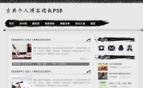古典风格-个人博客模板这是一个古典风格的个人博客模板，设计比较简单，没有太多花哨的元素，整个有一个山水画背景，画卷轴是中心部分。导航栏使用的是墨迹笔触下载模板
-
个人博客《草根寻梦》―手机版模板把帝国7.0系统升级到最新版本7.2，7.2版本主要是增加了一个多终端的功能，于是琢磨着做一个手机模板出来看看，在现在的模板基础上稍微改动下载模板

-
【活动作品】柠檬绿兔小白个人博客模板展示的是首页html，博客页面布局格式简单，没有复杂的背景，色彩局部点缀，动态的幻灯片展示，切换卡，标签云...此作品设计图作者窦耀宇下载模板

-
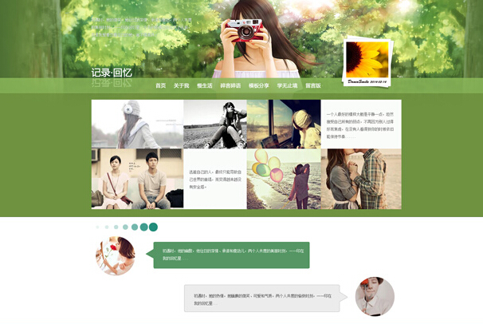情侣博客模板系列之《回忆》HtmlHtml5+css3情侣博客模板，主题《回忆》，使用css3技术实现网站动画效果，主题《回忆》,分为四个主要部分，照片墙、情侣介绍、图文组、祝福下载模板
-
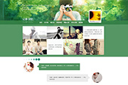情侣博客模板系列之《回忆》PSD情侣博客模板系列之《回忆》,分为四个主要部分，照片墙、情侣介绍、图文组、祝福模块。适合爱晒照片的小情侣，或者喜欢旅行类的朋友们，希下载模板
-
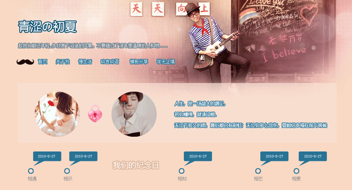情侣博客模板系列之《初夏》Html这套情侣博客模板，展示的是首页html，应用到css动画技术、实现文字从右到左逐渐显示的效果，以及时间轴的动画显示效果。下载模板
-
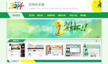个人博客模板《世界杯来袭》个人博客模板《世界杯来袭》,博客模板色调以绿色和黄色为主色、布局简单随意，以世界杯为主题，绿色清新、黄色活泼、醒目...下载模板
-
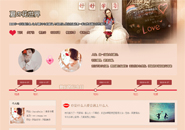情侣博客模板系列之《初夏》PSD2014情侣博客模板系列之《初夏》。使用单独的情侣博客管理、采用html5+css3、大图背景、时间轴、音乐播放器、性感嘴唇、胡子....使之充满下载模板
-
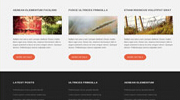简单三栏横向htm5网站模板（杂草丛生）布局简单、可作个人博客使用，颜色搭配暖色调也不失稳重大气。包括列表页、内容页。下载模板
-
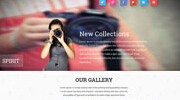HTML5摄影主题模板页面采用Html5+css3,突出摄影主题，图片展示个性化、个性、俏皮下载模板
-
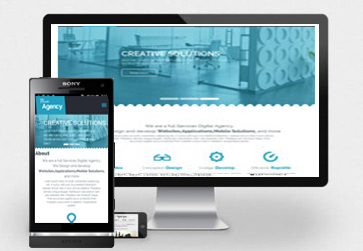蓝色机构企业网站模板企业网站模板，蓝色为主色。html5+css页面使用锚链接。布局紧凑、功能全面（图片、幻灯、文字）都展现的淋漓尽致下载模板
-
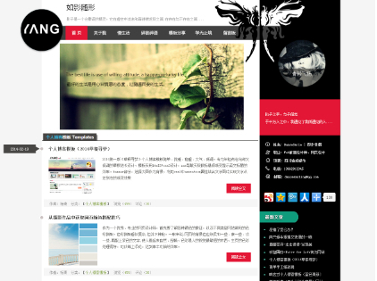黑色Html5个人博客模板主题《如影随形》014第二版黑色Html5个人博客模板主题《如影随形》，如精灵般的影子会给人一种神秘的感觉。一张剪影图黑白搭配，如果整个网站用黑白灰三色下载模板
-
个人博客模板（2014草根寻梦）2014第一版《草根寻梦》个人博客模板简单、优雅、稳重、大气、低调。专为年轻有志向却又低调的草根站长设计。模板采用html5+css3设计，na下载模板

-
响应式个人博客模板（蓝色清新）响应式个人博客模板，只有首页展示和下载，仅供学习参考。响应式网页已经流行很长时间了，有利有弊，不过作为web设计师，可以尝试尝试，分下载模板

- 国外免费响应式 HTML5 模板HTML5 和响应式都是 Web 开发领域中的热门技术，本文向你推荐一 个免费的响应式 HTML5 模板，将两种技术完美结合。推荐适合刚学习响应式模下载模板
-
仿新浪博客风格・梅――古典个人博客模界面设计非原创，出自新浪博客风格・梅作者水云心。在原来的设计上增加了梅花飘落的flash动画。原设计的边界阴影部分用图片实现，本例采用下载模板

-
黑色质感时间轴html5个人博客模板黑色时间轴html5个人博客模板颜色以黑色为主色，添加了彩色作为网页的一个亮点，导航高亮显示、banner图片鼠标划过，可以看到隐藏的文字。下载模板

-
Green绿色小清新的夏天-个人博客模板这是一个有关Green绿色小清新的夏天的css3 html5绿色个人博客网站模板，导航下面的效果使用了CSS3 Animation 实现对象从右到左渐变的动画下载模板

-
女生清新个人博客网站模板这是一个html5+css个人博客模板，顶部导航用了css3的gradient背景颜色渐变效果，结合js，对当前栏目高亮显示并且skew水平倾斜的效果。左侧下载模板

-
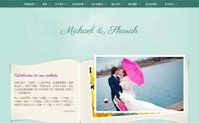Wedding-婚礼主题、情人节网站模板这是一个有关Wedding的html5 css3 网站模板适用于各种婚礼主题，也可以用在情人节有关的专题,这是一个专属两个人的爱情空间模板。下载模板
本栏推荐
- html5个人博客模板主题《绅士》30...
因其颜色主要是黑白搭配,重点突出的是文字内容,就像是一个颇有内涵的绅士.所以此模板主题为《绅士》,个人...
- html5时尚个人博客模板-技术门户型30...
这个是功能很全的html5个人博客模板,焦点图动态展示,增加了站内搜索,微信关注.侧栏使用了颜色标签,使网站...
- html5个人博客模板主题《心蓝时间轴》30...
Html5+css3个人博客模板，主题《心蓝时间轴》，使用css3技术实现网站动画效果，主要模块是时间轴部分.主题...
- 个人博客模板古典系列之――江南墨卷Html30...
一共是四个页面，首页，图文列表，图片列表，文字内容。此模板风格为中国古典风格，山水画墨迹成就一幅江...
- 个人博客《草根寻梦》―手机版模板30...
把帝国7.0系统升级到最新版本7.2，7.2版本主要是增加了一个多终端的功能，于是琢磨着做一个手机模板出来看...
- 【活动作品】柠檬绿兔小白个人博客模板30...
展示的是首页html，博客页面布局格式简单，没有复杂的背景，色彩局部点缀，动态的幻灯片展示，切换卡，标...

点击排行
- 【活动作品】柠檬绿兔小白个人博客模板30...
展示的是首页html，博客页面布局格式简单，没有复杂的背景，色彩局部点缀，动态的幻灯片展示，切换卡，标...
- 个人博客模板（2014草根寻梦）30...
2014第一版《草根寻梦》个人博客模板简单、优雅、稳重、大气、低调。专为年轻有志向却又低调的草根站长设...
- 黑色质感时间轴html5个人博客模板30...
黑色时间轴html5个人博客模板颜色以黑色为主色，添加了彩色作为网页的一个亮点，导航高亮显示、banner图片...
- 情侣博客模板系列之《回忆》Html30...
Html5+css3情侣博客模板，主题《回忆》，使用css3技术实现网站动画效果，主题《回忆》,分为四个主要部分，...
- 黑色Html5个人博客模板主题《如影随形》30...
014第二版黑色Html5个人博客模板主题《如影随形》，如精灵般的影子会给人一种神秘的感觉。一张剪影图黑白...
- 个人博客《草根寻梦》―手机版模板30...
把帝国7.0系统升级到最新版本7.2，7.2版本主要是增加了一个多终端的功能，于是琢磨着做一个手机模板出来看...

官方微信